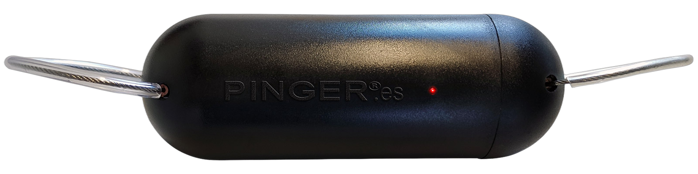

Pinger is the new-generation cetacean deterrent: programmable across a 40–400 kHz range, rechargeable and multi-species. One device — where the market offers only fixed-frequency disposables or research units no fleet can deploy.

Ninety seconds off the Iberian coast — the programmable emitter operating from a boat, cetaceans in frame.
The interaction between cetaceans and maritime activity is no longer an isolated incident. On the Iberian coast it now produces recurring economic loss, safety risk and regulatory exposure — every season, across several sectors at once.
Two product categories bracket the market from above and below. The gap between them is exactly where Pinger stands.
Cheap, one fixed frequency per model, disposable cells. Entrenched and compliance-listed — but a device that repeats a single tone is, by design, a tone animals can learn. Independent field trials increasingly report declining response.
Already rechargeable and programmable — but built for research and rental: roughly a week per charge, never designed to run a fleet. It proves the concept; it can't serve a fleet.
No incumbent holds all of it at once, and the data axis is unclaimed. Pinger unifies in a single unit what today demands several separate devices.
Against fixed-frequency, disposable-cell devices, Pinger unifies versatility, sustainability and in-field control.
Pinger is multi-sector by design. The same rechargeable, programmable base adapts to each operation's protocol.
Pinger bundles into one unit the capabilities that conventional deterrents split across several devices.
| Capability | Conventional pingers | Pinger |
|---|---|---|
| Frequency | Fixed per model | 40–400 kHz, programmable |
| Species coverage | One model per species | Multi-species — one unit |
| Field configuration | No — factory-fixed | Yes — reprogrammable by App |
| Battery | Disposable cells | Rechargeable (charging base) |
| Recreational boating | Adapted from fishing | Designed for it |
| Adapts to new regulation | Requires new hardware | Software update |
Comparison against the fixed-frequency, disposable-cell devices common in the market. Product-capability comparison.
Values marked “pending homologation” will be published once the corresponding trials and homologation close. Provisional figures, subject to validation.
Pinger operates in the regulated 130–145 dB re 1 µPa @ 1 m deterrence band: loud enough to move the animal, far below the levels that cause hearing damage. Reference thresholds follow NOAA (NMFS-OPR-55) and Southall et al. (2019).
| Market | Regulatory framework | Key acoustic requirement |
|---|---|---|
| EU | Reg. (EU) 2019/1241 · 2020/967 | 130–145 dB; 10 kHz tone or 20–160 kHz sweep; vessels ≥12 m |
| USA | NOAA · MMPA (HPTRP) | 10 kHz ±2 · 132 dB ±4 · 300 ms pulse / 4 s |
| UK | Post-Brexit MMO · Marine & Coastal Access Act | EU-equivalent + real-time acoustic monitoring (Scottish aquaculture) |
| Australia | EPBC Act 1999 · AFMA | >50 kHz or random multi-frequency (avoids “dinner-bell”); non-modulated ADDs banned |
| New Zealand | Marine Mammals Protection Act (DOC) | 50–120 kHz · <145 dB; must prove no habitat exclusion |
| Canada | Fisheries Act · DFO | 10 kHz @132 dB or 10–100 kHz sweep; migration-season use |
Because Pinger is App-programmable, the same unit meets the EU sweep requirement, avoids the “dinner-bell” effect flagged in Australia/NZ and drops to the low-emission modes those waters require — without changing hardware. Thresholds: NOAA NMFS-OPR-55 · Southall et al. (2019). Emission values provisional, subject to the Marexi device homologation.
We're presenting the new Pinger at METSTRADE — the world's leading marine-equipment show — at RAI Amsterdam. Book a meeting at our stand.
Tell us your sector and your operation and we'll prepare a demo and a tailored proposal. Institutional and defense enquiries are handled directly.
Contact details provisional — to be confirmed (Marexi).